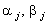
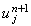

|
2.2. Вывод основных соотношений метода прогонки
Преобразуем неявную разностную схему (4.6),
группируя в левой части члены, содержащие значение функции u на (n + 1)-ом шаге по времени,
а в правой части - все остальные члены:
Введём следующие обозначения:
С учётом обозначений (4.9) равенство (4.8) будет иметь вид:
Данное преобразование часто называют
преобразованием неявной разностной схемы к виду, удобному для использования
метода прогонки.
Разностный шаблон (см. рисунок),
характеризующий неявную разностную схему (4.6), свидетельствует о том, что данная
разностная схема содержит три неизвестные величины - значения функции u на (n + 1)-ом шаге по времени.
Это обстоятельство затрудняет вывод рекуррентного соотношения, позволяющего
последовательно рассчитать значения искомой функции u в каждом из узлов разностной сетки
(подобно тому, как это было сделано в случае явной разностной схемы).
Следовательно, для реализации неявной разностной
схемы (4.6) требуется ввести некоторое дополнительное
условие, связывающее значения функции u на (n + 1)-ом шаге по
времени. Представим это дополнительное условие в виде линейной зависимости
справедливой для любого значения j = 1, ..., N - 1.
Соотношение (4.11) называют рекуррентным
прогоночным соотношением, а коэффициенты  - прогоночными коэффициентами.
Рассмотрим методику определения прогоночных
коэффициентов. Для этого перепишем соотношение (4.11) в виде:
Подставим данное выражение в (4.10) и выразим из полученного равенства :
Сравнивая выражения (4.11) и (4.12), получаем:
Выражения (4.13) позволяют рассчитать значения прогоночных коэффициентов на
j-ом шаге по координате х, если известны их значения на
(j - 1)-ом шаге по координате х (а также коэффициенты в
выражении (4.10), определение которых не должно вызывать затруднений). Следовательно,
для того, чтобы определить значения прогоночных коэффициентов на любом шаге по
координате х, необходимо знать их значения на 1-м шаге, т.е.  . .
|